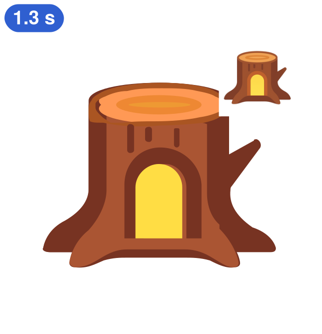
ANONYMOUS RESEARCH PROJECT
FlashSVG
Fast and Faithful SVG Generation
via Block Diffusion
Learn when to stop. Draft in parallel. Verify with the same model.
MORE FAITHFUL SVGS / OUTPUTS + METRICS
Fast. Faithful.
Explore the possibilities.
Explore the selected examples from Figure 1. Original input insets, text prompts and measured times stay with each example.
IMAGE-TO-SVG / MMSVG-BENCH / TABLE 1
Reconstruction quality
Measured on the benchmark, separately from the selected Figure 1 examples.
| Category | DINO ↑ | SSIM ↑ | LPIPS ↓ |
|---|---|---|---|
| Icons | 0.935 | 0.928 | 0.064 |
| Illustrations | 0.904 | 0.918 | 0.083 |
FlashSVG-4B · AR samples · 150 cases per category · mean of 3 training seeds. These are similarity metrics, not accuracy percentages.
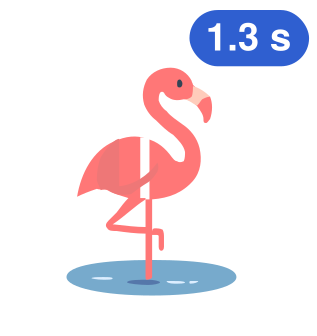
Flamingo
SELECTED OUTPUT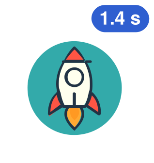
Rocket
SELECTED OUTPUT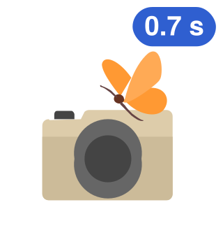
Camera
SELECTED OUTPUT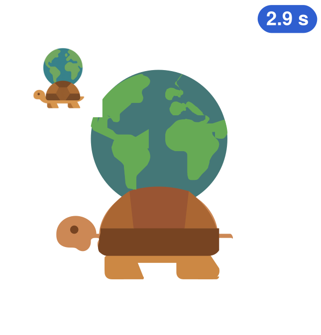
Globe turtle
INPUT INSET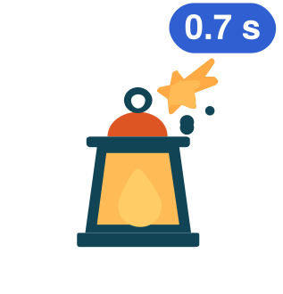
Lantern
SELECTED OUTPUT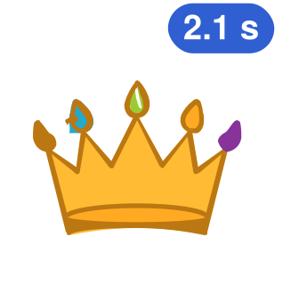
Crown
SELECTED OUTPUT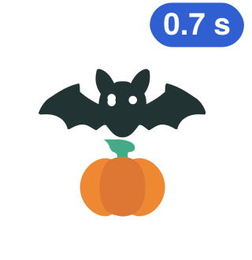
Bat and pumpkin
SELECTED OUTPUT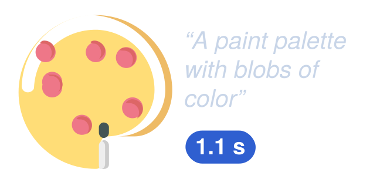
Paint palette
TEXT PROMPT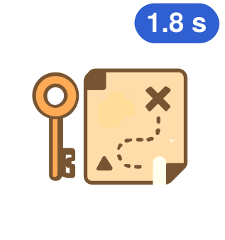
Key and map
SELECTED OUTPUT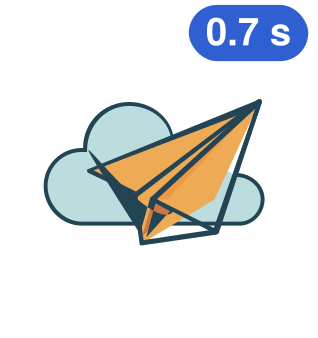
Paper plane
SELECTED OUTPUTPirate hat and telescope
SELECTED OUTPUT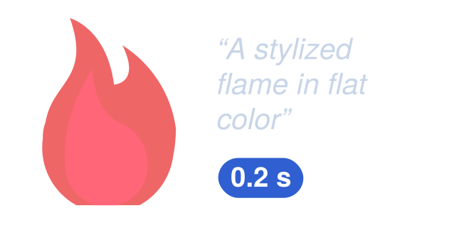
Flame
TEXT PROMPTSelected by the authors for visual appeal. Each time badge belongs to its own example. Input images appear only where supplied in the original figure; prompts are retained for the palette and flame.
LEARN TO TERMINATE / OMNISVG VS. FLASHSVG
It renders.
But did it finish?
A path-token SVG can still render after truncation. Validity alone can hide a model that never emits EOS.
CANDIDATES THAT EMIT EOS / IMAGE-TO-SVG
Icons
Illustrations
Table 1 · All sampled candidates, up to 8 per case. FlashSVG averages 3 training seeds; released OmniSVG uses a single evaluation. EOS measures program termination.
SAME SVG TOKENIZER / TWO TERMINATION BEHAVIORSTOKEN STREAM REPLAY
One keeps going. One reaches EOS.
Same tokenizer. Different stopping behavior.
SVG EXAMPLE
Path symbols by default. Switch to integer token IDs.
OmniSVG-4B
READYBOSInput prefix · not counted
FlashSVG-4B
READYBOSInput prefix · not counted
CommandCoordinateColorEOS
Tokenizer data is being connected.
Tokenizer source and playback data
DRAFT AND VERIFY FASTER / AUTOMATIC PLAYBACK
Watch it generate.
All the way to EOS.
The same model alternates between parallel drafting and causal verification, committing an accepted prefix each round until EOS. The full sequence plays automatically.
SHARED θ / BLOCK 16
01 / MASK02 / DRAFT03 / VERIFY04 / COMMIT
AcceptedCorrectedDiscarded
COMMITTED TOKENSBOS
READY0ROUNDS
0FORWARDS
0TOKENS
The generation starts automatically when this panel opens.
Official tokenizer IDs; illustrative acceptance decisions and playback timing. Hover a token for its ID. BOS is input context.
pθ
Keep the final model’s autoregressive distribution.
§4.4 ↗Verification uses the rejection-sampling acceptance rule and residual correction. The guarantee concerns the adapted checkpoint under matched sampling settings, up to floating-point rounding.
FLASHSVG / PIPELINE
How FlashSVG works.
TRAIN
- 01OmniSVGReleased AR model
- 02Block diffusionLearn parallel drafting
- 03Termination-aware learningFidelity + EOS
- 04FlashSVGTrained checkpoint
GENERATE
- 01Image or textCondition + SVG prefix
- 02Draft 16 tokensOne parallel pass
- 03Verify & commitSame FlashSVG weights
- 04SVG outputDecode the token sequence
Repeat draft → verify → commit until EOS or the 1,536-token cap.
POST-TRAINING / FIDELITY AND EOS
Draw faithfully.
Stop at the right time.
This is the post-training stage. The model learns from selected SVG candidates, updating its parameters to improve both reconstruction and termination.
FLAMINGO / CANDIDATE SELECTION
Figure 1 · FlamingoReal paper artwork, used here to illustrate candidate selection.
01EOS ✓y⁺
02EOS ✓
03CAP ×y⁻
04EOS ✓
05CAP ×
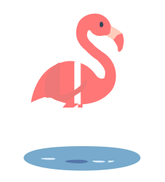
06EOS ✓
07EOS ✓
08EOS ✓
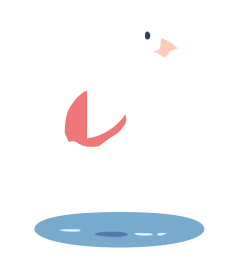
y⁺ / FAITHFUL + EOSy⁻ / RUNAWAY FIRST
y⁺ ↑ y⁻ ↓→UPDATE MODEL θ
Original artwork: Figure 1. Candidate variations and EOS/CAP states illustrate the selection rule; they are not eight recorded model outputs.
01
Sample and compare
For the same input image, sample eight SVG candidates. Compare their rendered fidelity and whether each emits EOS.
02
Learn a good output: y⁺
Choose a faithful candidate that ends, or fall back to ground truth. Train the model to produce this target under both image and text conditions.
03
Prefer it over a poor output: y⁻
Prioritize a non-terminating negative; otherwise try a sufficiently lower-scoring candidate. Image-conditioned preference learning favors y⁺ over y⁻.
Exact target and negative selection rules
A self-target must emit EOS and reach at least 90% of the ground-truth reconstruction score; choose the highest-scoring qualified candidate. If none qualifies, use ground truth. When runaway candidates exist, choose the lowest-scoring one as the negative. Otherwise, try the lowest-scoring candidate at least 0.1 below the positive target. If no suitable negative exists, train on the positive target alone.
TARGET-ONLY → FLASHSVG / TABLE 278% → 99%
Scored icon outputs that emit EOS
EXPERIMENTS / FOLLOW THE EVIDENCE
Better drawings.
Fewer wasted steps.
Separate reconstruction quality, execution speed, and the contribution of each training component.
QUALITY × LATENCY / IMAGE-TO-SVG ICONS
Move toward the upper left.
The paper’s overview places fidelity against latency. Marker shapes distinguish inference engines and remote API timing; causal speed attribution uses the matched-engine comparison in the next tab.
DINO / ILLUSTRATIONS0.707 → 0.904OMNISVG-4B → FLASHSVG-4B
MMSVG-BENCH / TABLE 1
| Model | DINO ↑ | SSIM ↑ | LPIPS ↓ | Candidate EOS ↑ |
|---|---|---|---|---|
| FlashSVG-4B | 0.935 | 0.928 | 0.064 | 99.7% |
Table 1 · 150 cases per category.
Scope: stronger API references and the pixel tracer vtracer remain ahead on several reconstruction metrics. FlashSVG focuses on learned, conditional SVG generation.
SAME ENGINE / TWO SOURCES OF SPEEDUP
Train for completion. Verify for speed.
The first reduction changes the model and its output lengths. The second changes decoding while keeping the final checkpoint fixed.
FUSED ENGINE · NVIDIA H20 · BATCH 1 · FIRST 40 MMSVG-BENCH IMAGE-TO-SVG ICONS · SEED 1 · FIRST VALID OF UP TO 8 · FIGURE 6 / TABLE S9
MATCHED 4B CONTROL / S2
What does diffusion add?
A matched causal-only continuation followed by the same post-training reaches similar reconstruction quality. Diffusion supplies the parallel drafting mode; the quality gain also depends on continued SVG training and post-training.
Causal + post-training0.935 / 0.896
Diffusion + post-training0.935 / 0.904
DINO · icons / illustrations. Difference confidence intervals include zero. This matched-objective control is reported for 4B.
| Setting | DINO I / II | EOS_out I / II |
|---|---|---|
| Self-targets / λ = 0 | .855 / .752 | 78% / 53% |
| Preferences / λ = 0.3 | .911 / .849 | 95% / 84% |
| FlashSVG / λ = 30 | .937 / .910 | 99% / 99% |
I / II: icons / illustrations. Verified decoding; three training seeds. EOS_out counts scored outputs, unlike the all-candidate EOS in Table 1.